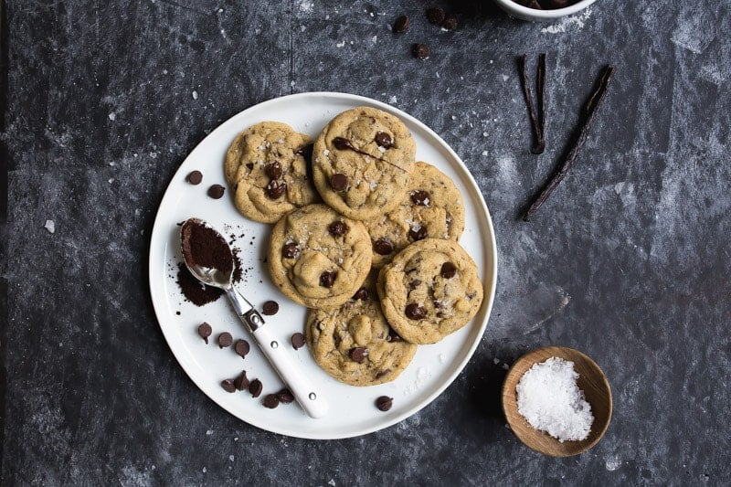

Salty Vanilla Bean Espresso Chocolate Chip Cookies

Desciption:
I make a pretty mean small batch of chocolate chip cookies. Mainly, they're famous because they have espresso powder and too much vanilla. And probably too much salt. (Side note: this is the best espresso powder in the world, and this is the exact finishing salt I use on my cookies).
Ingredients:
- 6 tablespoons (84g) salted butter, softened
- 1/4 cup (53g) dark brown sugar
- 3 tablespoons (37g) granulated sugar
- 1 large egg yolk
- 1/2 of a vanilla bean, sliced open and scraped, or 1 tsp to 1/2 tbsp vanilla extract
- 1/2 cup + 2 tablespoons (75-80g) all-purpose flour
- 1/4 teaspoon fine sea salt
- 1 heaping teaspoon instant espresso powder
- 1/4 teaspoon baking soda
- 1/4 teaspoon baking powder
- 1/3 cup (about 56g) semisweet chocolate chips; add less or more as desired
Instructions:
- Preheat the oven to 375oF. Line a light-colored baking sheet with parchment or a silicone mat.
- In a medium bowl, beat the butter with an electric mixer on medium speed until fluffy, about 20 seconds. Add the sugars, and beat for about 30 seconds. The mixture will turn slightly paler and more fluffy.
- Next, add the egg yolk and the vanilla seeds or extract, and beat until just combined.
- Whisk together the flour, salt, espresso powder, baking soda and baking powder in a separate bowl.
- Sprinkle the flour on top of the butter mixture, and beat just until combined (preferably by hand).
- Stir in the chocolate chips.
- Scoop the dough into 12 dough balls (about 1 tbsp each), and space them evenly on the baking sheet; they should be at least 1.5 inches apart.
- Bake for 8-10 minutes, removing the cookies from the oven when the edges just start to turn golden brown.
- Let the cookies rest on the baking sheet for a couple minutes before moving them to a wire rack to cool.